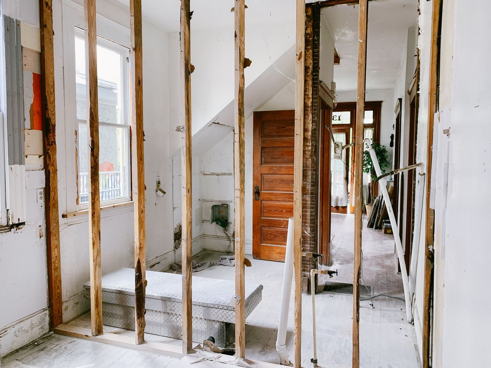
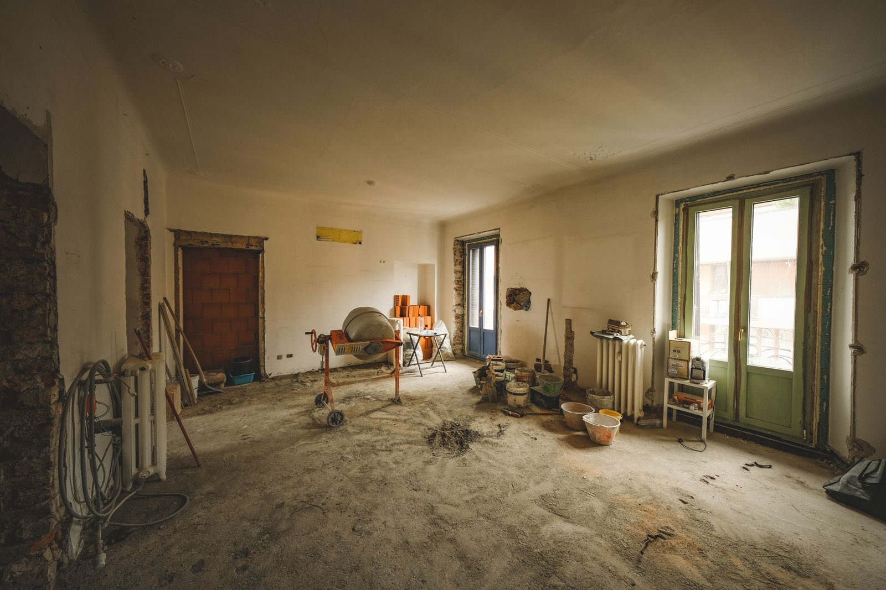
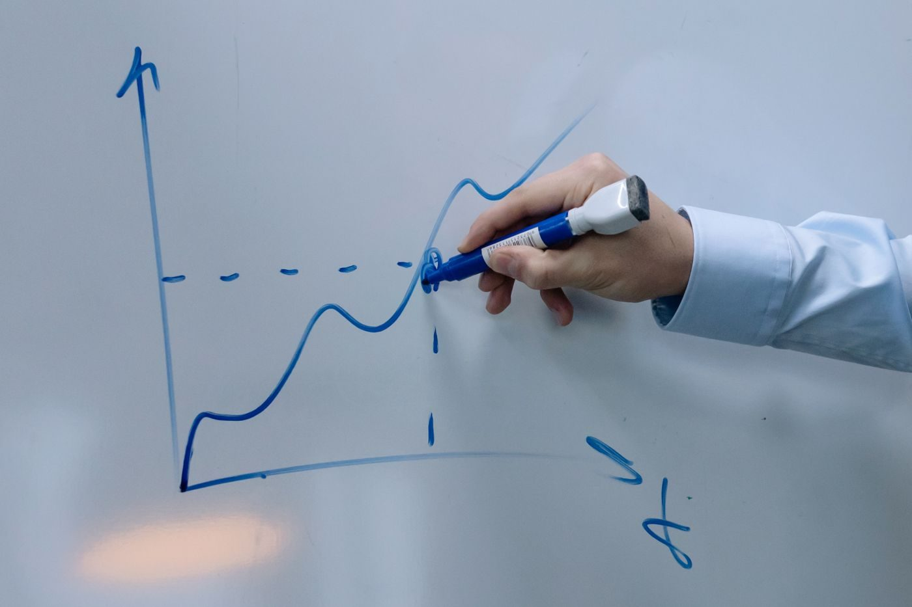
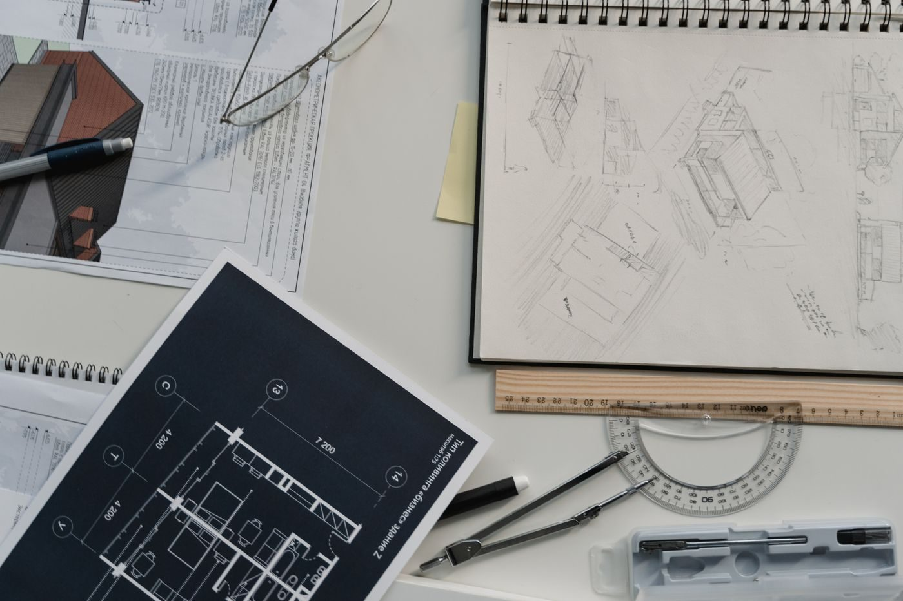
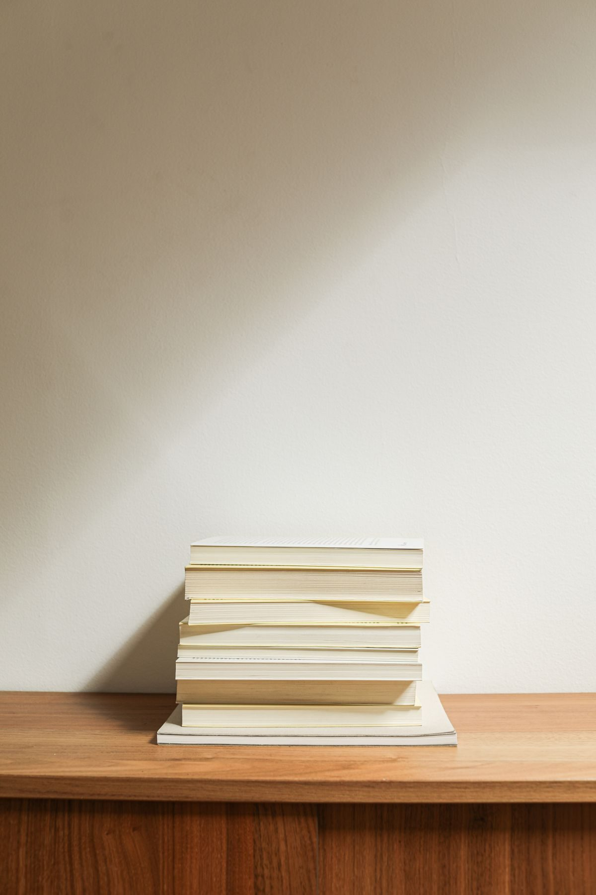
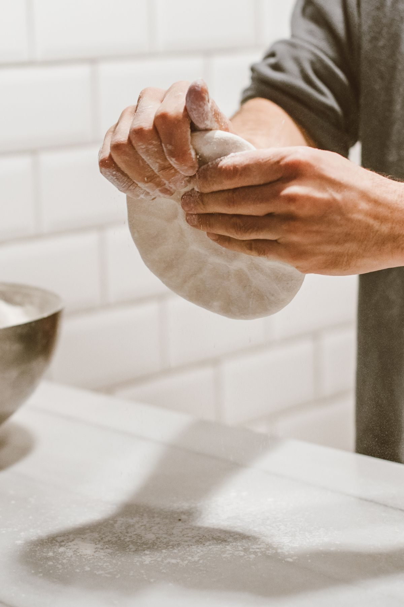
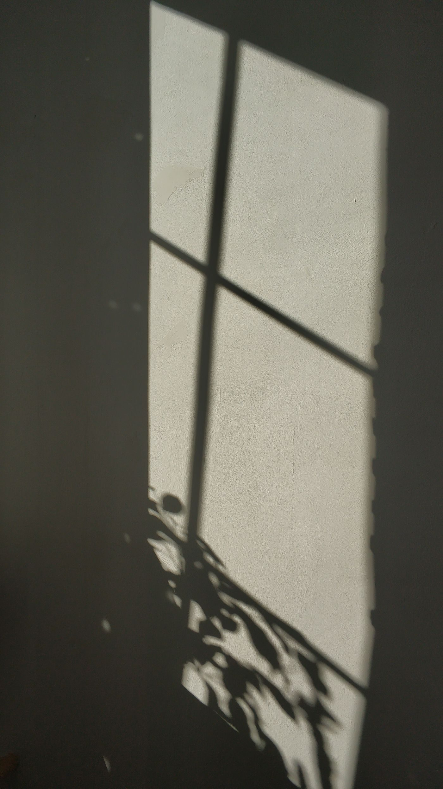

Manual da marca pessoal
Transformar possibilidades dispersas em estruturas que podem existir.
Este é o caderno de obra da marca de Roberto Pivotto: advogado, mestre em Ciência, Tecnologia e Inovação, sócio da EJUP e da EIX CORE. Uma marca que ainda está sendo construída. De propósito.
Pivotto: o ponto onde a curva muda de direção.
Começar a obra
setas do teclado mudam de capítulo
caderno de obra · v1
3 desafios, 3 carimbos
capítulo 1
Quem é Roberto antes da estratégia
A identidade não veio pronta. Foi construída em mudanças de rota: universidade pública por esforço próprio, o Direito como busca de segurança, a EJUP como entrada no empreendedorismo, a EIX CORE como fronteira tecnológica, o mestrado como método.
- Essência
- Transformar possibilidades dispersas em estruturas que podem existir.
- Motor
- Autonomia: ampliar poder de decisão sobre tempo, trabalho, recursos e direção de vida.
- Talento distintivo
- Imaginar, conectar, estruturar, prototipar e colocar de pé negócios a partir de competências complementares.
- Princípio biográfico
- Se eu não encontro o caminho, eu mesmo o faço.
Arquétipos · clique para virar
Evitar como código dominante: o Herói performático, o Rebelde, o Mago e o Governante rígido.
capítulo 2
O inimigo cultural
A cultura de escassez que transforma carreira em disputa por vaga, relação em oportunismo e conhecimento em território.
Roberto reconhece competição. A diferença está em recusar que toda competição exija isolamento. Colaboração deixa de ser gentileza e vira infraestrutura econômica.
Entre dois extremos
rejeitaO formalismo que usa tradição como argumento para não mudar.
ocupaRespeitar fundamento e testar caminhos. Admirar tecnologia e exigir aplicação. Valorizar relações sem instrumentalizar.
rejeitaA inovação performática que celebra novidade sem construir valor.
capítulo 3
A Grande Visão e a regra que a protege
Construir um ecossistema empresarial capaz de transformar conhecimento, talentos, capital, relações e oportunidades em negócios que se fortalecem reciprocamente. Em 2040, Roberto coordena uma arquitetura de quinze a vinte negócios conectados, e já saiu do centro operacional.
hojeEJUP e EIX CORE como prova. Founder operador.
fase I a IVLastro, fronteira, articulação, direção. Doze meses de percepção.
2030Estrutura de venture builder organiza novos projetos.
2040Quinze a vinte negócios interdependentes. Coordenador, e não operador.
Regra de reputação
Provar antes de proclamar.
Quanto maior a ambição declarada, maior a proporção de provas, negócios, pessoas e resultados visíveis capazes de sustentá-la. A palavra “ecossistema” como projeto próprio só entra na fase IV.
desafio 1
Conecte a estrutura
O lugar simbólico de Roberto: o profissional que enxerga estruturas antes de elas estarem prontas. Clique nos quatro elementos soltos e veja o que aparece.

síntese identitária
Arquiteto de Negócios
Uma chave estratégica, e não um cargo. Descreve a capacidade de imaginar estrutura, combinar elementos e desenhar relações.
0 de 4 conectados
capítulo 4
Direção visual: caderno de obra
Um laboratório de negócios com textura de vida real. A marca vive onde a ideia ainda está sendo desenhada: quadro, vidro, caneta, papel. Tudo parece anotado por quem está construindo.
Papel de planta#F1F0EA
Papel manteiga#E9E7DF
Tinta#22252A
Caneta de quadro#2B57A6 · acento único
Grafite#6E7278
Fita crepe#D9CBA8
Tipografia
Newsreader para títulos e capas
Newsreader itálico, só na frase de convicção
Instrument Sans no corpo, na legenda e no slide. Máximo de 65 caracteres por linha. Rótulos em caixa alta com espaçamento aberto.
Courier Prime nas tags, na faixa e no quadro O Código.

quem vende hora perde com isso.
voz de impacto · Generic G80 (More! Etc.) · só em capa de Reels e slide escuro com fotoKit de anotações à mão · passe o mouse
- círculoa palavra que muda o sentido
- sublinhadoênfase sem drama
- riscadoo que a marca rejeita
- causa e consequência
- fita crepeetiqueta rotacionada, no máximo duas por carrossel
Regra da caneta: uma marca por slide. Exceções: o slide-quadro e um círculo no slide de estrutura.
desafio 2
Circule a palavra certa
Na capa do carrossel, só uma palavra recebe a caneta: a que muda o sentido da frase. Clique nela.
capítulo 5
O carrossel, slide a slide
Série “Se eu tivesse que construir isso do zero”. O que evita cara de template é a variação de densidade: denso, depois ar. Arraste ou use as setas do trilho.
Na EJUP, já tivemos no mesmo mês:
serviço bem entregue,
cliente satisfeito,
caixa apertado.
A conta não fechava por causa do modelo. O trabalho seguia bom.
Preço é só a última linha do modelo
Modelo é como o dinheiro entra, quando entra e do que ele depende.
Se depende da sua hora, mudar o preço só adia o problema.
Ideia
Modelo
Operação
Caixa
Gente
Mercado paga?
sim → cresce
não → insiste redesenha
nenhuma das caixas é “ter uma boa ideia”
A parte bonita de empreender quase nunca é a parte que mantém a empresa viva.
Antes de chamar de negócio
- Modelocomo o dinheiro entra e do que depende
- Gentequem executa quando você não está
- Caixaquantos meses a decisão aguenta
- Mercadoquem já paga por isso hoje
Qual dos quatro está travando o seu?
Me conta nos comentários. Eu respondo com o que faria no seu lugar.
capao casocamadaquadrorespiroestruturafecho
capítulo 6
Os quadros e quem assina cada um
Antes de desenhar peça, é preciso saber de quem é a voz. A proposta de conteúdo separa dois emissores e fica com três formatos com nome, cadência e squad: O Código, da EJUP, e dois quadros de Roberto. O que circula entre eles são dispositivos gráficos, não quadros.
A fronteira de canais
emissor, não assunto
@ejup.oficial
@robertopivotto
Emissor
Escola de Negócios e Direito. Marca-mãe, estável.
Marca pessoal, flexível. Arquiteto de Negócios.
Protagonista
O aluno e o jurista são o herói. A EJUP é o guia.
Roberto, na jornada real de construção.
Formato âncora
O programa O Código, gravado às terças no estúdio.
Dois quadros autorais: O outro lado da tese e Anatomia do caso.
Collab
Canal-mãe dos verticais, em collab com Roberto.
Coautor nos cortes. Autor dos quadros.
A regra
Vertical de O Código nasce no institucional com Roberto em collab. Nunca o contrário.
Os dois quadros autorais
perfil pessoal
01 · semanal
O outro lado da tese
A leitura do que está circulando. Três entradas com a mesma mecânica: a tese frágil sobre sociedade, startup ou contrato; o julgado do STF ou do STJ; a notícia de IA, regulação ou novo negócio.
"No papel aceita-se qualquer tese, mas o mercado real cobra a conta da estrutura."
Dispositivo por entrada: o riscado com a correção na margem · a curva que pivota · o recorte preso com fita
02 · quinzenal
Anatomia do caso
Um caso em três atos: conflito, arquitetura, lição. Alterna o caso de fora, uma disputa corporativa, com o caso de dentro, uma decisão real da EJUP ou da EIX CORE.
"As maiores empresas não quebram por falta de ideia, mas por falhas na arquitetura dos seus ativos."
Dispositivo: o diagrama à mão, com a junta rompida circulada ou refeita
O Código e os dispositivos
o programa e os sinais que circulam
O Código
- Art. 12 Toda ideia precisa de modelo antes de precisar de marca.
- § 1º Modelo é como o dinheiro entra, quando entra e do que depende.
- § 2º Se depende da sua hora, a IA não resolve. Só encurta o prazo.
- // sem caixa, não existe § 3º
O Código
O programa da EJUP, gravado às terças. Cada episódio é um artigo: a regra por trás de um negócio, de uma tecnologia ou de uma decisão, escrita como lei e comentada como código. Courier Prime é máquina de escrever e é editor de texto, então resolve as duas leituras sem ilustrar nenhuma.
No perfil pessoal ele aparece de três maneiras, e só dessas três: o corte em collab, o artigo estático e o bastidor do que ficou fora.
Semanal · artigo é o ativo que fica · collab EJUP + Roberto
Ponto fora da curva
Ponto fora da curva
Dispositivo, não quadro. O caso que escapou do padrão do setor. Vive dentro da Anatomia do caso e de O outro lado da tese, quando a pauta é o desvio e não a falha.
Dispositivo gráfico · nuvem em Grafite, um ponto em Caneta, circulado
A curva que pivota
A curva que pivota
Dispositivo, não quadro. O momento em que a direção muda. É o sinal gráfico da marca e o motivo de ele existir: Pivotto é quase pivotar. Em O outro lado da tese com entrada julgado, o julgado é o pivô.
Dispositivo gráfico · Grafite antes, Caneta depois, pivô em círculo cheio
Giro semanal e Direito em alta voltagem viraram entradas de O outro lado da tese. As séries Se eu tivesse que construir isso do zero, Do rascunho à operação e Quando reconstruir é melhor que insistir viraram o caso de dentro de Anatomia do caso. O resto é pauta, sem nome fixo.
capítulo 7
Como a marca fala de IA, inovação e presença digital
Tecnologia aparece como ferramenta de transformação aplicada, nunca como identidade vazia. A regra vale para o discurso e para a própria produção do conteúdo.
- Art. 1º Inovação é o que chega à realidade. Novidade é o que fica na apresentação.
- Art. 2º Roberto usa e constrói com IA. Não é engenheiro, e diz isso.
- § único Experiência prática nunca se apresenta como autoridade técnica.
- Art. 3º Todo conteúdo sobre IA responde a uma pergunta: o que isso muda no caixa, no cliente ou na operação?
- Art. 4º A IA rascunha, organiza e edita a produção da marca. Ela não opina por Roberto.
- // "a IA vai acabar com todas as profissões" não passa por aqui
- Art. 5º Presença digital forte é frequência com lastro: aparecer sempre, prometer pouco, mostrar obra.
Sistema de presença
- Descoberta e proximidade. Reels em tela dividida, carrosséis dos quadros, bastidor nos stories.
- Autoridade institucional. O Código em texto longo, decisões de negócio, interlocução com founders, investidores e gestores públicos.
- YouTube
- Profundidade e memória. Ponto fora da curva, séries de construção, aulas abertas.
- Newsletter e site
- Base própria, fora do algoritmo. Um artigo do Código por edição e o arquivo de tudo.
- EJUP e EIX CORE
- A prova. Toda afirmação sobre inovação aponta para algo que existe nas duas empresas.
capítulo 8
A entrada notícia e o Reels em tela dividida
Roberto comenta o tema do dia. A manchete entra como recorte de papel, o dado é redesenhado em caneta, a leitura dele fecha. No Reels, o b-roll fica em cima, ele embaixo, e a legenda queimada senta na emenda.
Escritórios aceleram uso de IA e reduzem horas faturáveis
quem vende hora perde com isso
Roberto · câmera frontal · luz de janela
recorte
Portal de exemplo · 3 set 2026
Escritórios aceleram uso de IA e reduzem horas faturáveis em contratos padrão
- Print nunca cru. Sempre em moldura de papel ou celular, levemente girado, com fonte e data.
- Dado em caneta. Gráfico da matéria é redesenhado, com fonte embaixo. Número só com lastro validado.
- Corte de b-roll a cada 2 a 4 s. A fala nunca para. Mesma grade de cor no b-roll e no talking head.
- Terceiros. Rosto de pessoa citada só quando figura pública e a matéria for o assunto. Sem meme, sem print de rede alheia.
capítulo 9
O que aparece quando ele fala
Banco de imagens por pilar, filmado por nós. As fotos abaixo são referência de enquadramento, luz e assunto, coladas aqui como num caderno de campo.





Nada de banco genérico: luz real, sombra, matéria em processo, ninguém posando. Fotos de referência via Pexels, créditos no fim.
capítulo 10
Sete pilares, um mix
Cada pilar constrói um atributo de percepção. Arquitetura e Bastidor somam metade do volume: são eles que provam “pensa estrutura e coloca de pé”. Vida nunca domina.
Arquiteturacapacidade de estruturar30%
Bastidormaterialização e humanidade20%
Direito, IA e novos caminhosrepertório multidisciplinar15%
Ecossistemaarticulação15%
Repertórioaprendizagem10%
Reconstruçãomaturidade5%
Vidahumanidade5%
segAnatomia do caso, carrossel (semanas 1 e 3) · post estático (semanas 2 e 4)
tergravação, stories de bastidor
quacorte de O Código, Reels em collab
sexO outro lado da tese, em ciclo: post estático, carrossel, Reels
fdsstories orgânicos
Quadros com nome
- O Código
- O outro lado da tese
- Anatomia do caso
desafio 3
Pode publicar?
Sete rascunhos de legenda. Decida se saem como estão ou se voltam para a mesa. As regras vêm do manual: provar antes de proclamar, vida pessoal só quando ilumina, sem juridiquês, sem frase de coach.
“Como construtor de ecossistemas, aprendi que toda parceria começa com generosidade.”
“Gastamos três meses produzindo aulas para um formato que ninguém tinha pedido. A conversa com doze alunos antigos custou uma tarde. Hoje a gente vende a turma antes de gravar.”
“Qualquer pessoa consegue empreender se quiser. O segredo é começar.”
“Meu ex-sócio nunca entendeu caixa. Foi por isso que a primeira sociedade acabou.”
“Edital de spin-off com participação de pesquisador muda uma coisa que a universidade não tinha: sociedade no resultado. Quem no seu ecossistema já testou isso?”
“Crescemos 300% em um ano com uma equipe de quatro pessoas.”
“Na EJUP, a IA cortou pela metade o tempo de montar uma aula. Não sei explicar o modelo por dentro. Sei dizer o que mudou no custo.”
1 / 7
Eu não acredito que todo caminho precise ser encontrado pronto.
Aprendi que insistir nem sempre é o mesmo que persistir. Às vezes, persistir significa redesenhar.
Também aprendi que construir não significa fazer sozinho.
Eu não quero parecer alguém que construiu um grande ecossistema antes de construí-lo.
Se eu não encontro o caminho, eu mesmo o faço.
Não para caminhar sozinho. Mas para construir caminhos em que outras pessoas também possam avançar.
status da obra
Obra em andamento
Estrutura conectada
Palavra certa
Protocolo
Volte aos três desafios para carimbar o caderno.